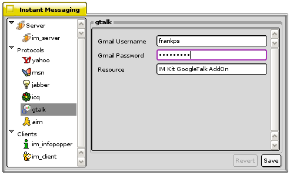

The Instant Messenger Kit
Configuring the Instant Messenger
To use the IM Kit, you will need an account on one or more of the IM services that we support. The IM kit is not capable of creating accounts for any of the protocols. To edit your settings for the Instant Messenger Kit and the installed protocol(s), right-click the im_kit's replicant in the Deskbar and select Settings.
Server
im_server

The IM kit can be set to start up with your system. This can be done in two ways, by adding a shortcut of im_server to ZETA's Autostart folder or by simply checking Auto-Start for both the im_client, im_logger and im_server in the IM preferences.
Activating the Blink Deskbar icon option will make the IM kit's Deskbar replicant blink when you receive an instant message. For the Deskbar replicant to be able to blink you will first have to activate Show icon in Deskbar.
The Debug log threshold can be set to High.
An Away Message can be set system wide for all protocols, but you can also set an unique away message for each protocol.
Protocols
In the IM Server settings click on the protocol you want to edit.
Yahoo!
Yahoo! has made their own instant messaging client and protocol. To use the protocol under the IM kit, you will have to have a generic "Yahoo! ID" that let you make use of their services (mail, im, calendar and more). There is also a standalone Yahoo! Messenger (BeY!) for ZETA available on BeBits.
MSN
The MSN Messenger is an instant messaging system developed by Microsoft, that works together their Passport system. The Instant Messenger kit has partial support for this protocol, as you can only send and receive messages with this protocol implementation. To make use of this protocol you will have to have a Passport Email. Most people use their hotmail address, but also other e-mail addresses can be used. Add your Passport Password and a Display Name.
When it comes to the MSN protocol there are two standalone applications available, MSN ++ and Bme.

Jabber
Jabber is a set of streaming XML protocols and technologies that enable any two entities on the Internet to exchange messages, presence and other structured information. Username and Password is added as for the other supported protocols.
What differs the Jabber protocol compared to the other protocols, is that you also have to add information about the server that you want to use. There are tens of thousands of Jabber servers running today, and millions of people use Jabber for IM. These servers can either be a private Jabber network or a public server. The jabberd server software makes the architecture of the Jabber network similar to e-mail. This is currently one of the few protocols that enable individuals and organizations to take control of their IM experience. If your company is running Zeta on your desktop computers and you are in the need of an IM server, then jabberd should be your choice.
A list of available IM servers are available on Jabber web site.
ICQ
The ICQ protocol was the first supported protocol in the IM kit. ICQ is a play of the phrase "I seek you". To use the ICQ protocol, you will need an ICQ account. ICQ users are indetified by numbers (UIN) instead of usernames. In the ICQ settings you will find fields for adding your UIN, Password, and choose your prefered Text encoding.
The default text encoding is UTF-8. For European users we recommend ISO 8859-1, as it is commonly used for the following languages: Albanian, Basque, Catalan, Danish, Dutch, English, Faroese, French (missing only œ), Finnish, German, Icelandic, Irish, Italian, Norwegian, Portuguese, Rhaeto-Romanic, Scottish, Spanish and Swedish. The JIS encoding refers to several Japanese Industrial Standards for encoding the Japanese language. Shift-JIS is a character encoding for the Japanese language developed by Microsoft. EUC (Extended Unix Coding) is an 8-bit character encoding used primarily for Japanese and Korean. The last supported encoding Windows 1251, is an 8-bit character encoding, designed to cover languages that use the Cyrillic alphabet such as Russian and other languages.
For information about the various input_servers available for Zeta, please read the article How to use Input Servers in Zeta.
To activate the changes you have made, press Save.

Google Talk
Google Talk is a popular, lightweight Jabber-based instant messaging client with voice capabilities, currently only available for Windows. But as it is based on the open Jabber (XMPP) protocol, you can chat with friends having Google Talk from other third party IM clients, including the IM kit.
AIM
If you want to start using the AIM protocol, you will have to register at http://www.aim.com/. When registered, you will have your Screen Name and a Password, which you can add to this preflet.
Information for the User Profile is optional. User profiles provide a way for individuals to share backgrounds and opinions with the community, and is a nice way to show that you are a Zeta user.
After having added the information you want for the AIM protocol, press Save to activate the protocol. The AIM protocol is called OSCAR (Open System for CommunicAtion in Realtime), and is the same protocol that also ICQ makes use of.
For more information about using the AIM protocol under Zeta, please read the BeAIM article.
Clients
im_binlogger
The im_binlogger collecting up the bmessages that are sent between the im_server and the client of your choice, and writing them to logs for each person that you are having registered an IM protocol on. These logs can be read with the im_binlog_viewer.
im_logger
im_logger is listening to the IM kit applications and writing them to a simple text file found in your home folder (im_kit.log). You will for instance see all the errors that appears the IM Kit here.
im_infopopper
The small tool InfoPopper first started as part of the IM kit. The IM kit has it's own settings for these pop-ups. You can here edit the way that the information is presented you on the screen. The InfoPopper window can contain an icon. As the icons are in SVG, you can set the prefered size on them.
im_client
The im_client has a Menubar containing scalable icons. The default size is set to 32 pixels, but if you have a high screen resolution, you might want to set the Icon Size to 48 or even 64 pixels.
The im_client has by default both Show 'Send' button and Send messages with CMD-Enter instead of Enter activated.
As mentioned above you can Auto-start the im_logger together with the im_server and im_client during the system startup.